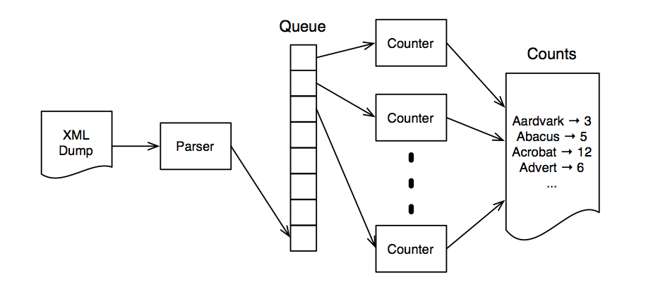

Concurrency models: Go concurrency model
by Vasyl Nakvasiuk, 2014

Kyiv Go Meetup #1
Concurrency and Parallelism
Concurrency and Parallelism
The world is object oriented
The world is parallel
The world is object oriented and parallel
Concurrency and Parallelism
Concurrency is a composition of independently computing things.
Parallelism is a simultaniuse execution of multiple things.
Concurrency is about dealing with lots of things at once.
Parallelism is about doing lots of things at once.
Rob Pike, "Concurrency Is Not Parallelism", 2012
Concurrency and Parallelism
Concurrent
Concurrent and parallel
Parallel
Concurrency and Parallelism
Users
Software
Multicore
Multicore
Concurrency and Parallelism
Moore’s law
CPU: Why are stalled?
Concurrency and Parallelism
Shared memory
Concurrency and Parallelism
Distributed memory
Concurrency and Parallelism
Concurrent Software for a Concurrent World
Distributed Software for a Distributed World
Fault-tolerant Software for an Unpredictable World
Threads and Locks
Threads and Locks
Process
Thread

public class Counting {
public static void main(String[] args) throws InterruptedException {
class Counter {
private int count = 0;
public void increment() { ++count; }
public int getCount() { return count; }
}
final Counter counter = new Counter();
class CountingThread extends Thread {
public void run() {
for(int x = 0; x < 10000; ++x)
counter.increment();
}
}
CountingThread t1 = new CountingThread();
CountingThread t2 = new CountingThread();
t1.start(); t2.start();
t1.join(); t2.join();
System.out.println(counter.getCount());
}
}
count != 10000
Threads and Locks: Problems
Heisenbugs
Race conditions
Threads and Locks: Locks
Mutual exclusion (mutex)
Semaphore
High-level synchronization
Threads and Locks: Locks
class Counter {
private int count = 0;
public synchronized void increment() { ++count; }
public int getCount() { return count; }
}
count == 10000
Threads and Locks: Multiple Locks
“Dining philosophers” problem
Deadlock!
Threads and Locks: Multiple Locks
Deadlock
Self-deadlock
Livelock
Threads and Locks: Multiple Locks
“Dining philosophers” solutions
Resource hierarchy solution
Arbitrator solution
Try Lock
Threads and Locks: Wikipedia parser
What’s the most commonly used word on Wikipedia?
“Producer-consumer” pattern
Threads and Locks: Wrap-Up
Strengths
“Close to the metal”
Easy integration
Weaknesses
No parallelism
Only shared-memory architectures
Hard to manage
Hard to testing
Functional Programming
Functional Programming
Immutable state
Effortless Parallelism
Functional Programming: Sum
(defn reduce-sum [numbers]
(reduce (fn [acc x] (+ acc x)) 0 numbers))
(defn sum [numbers]
(reduce + numbers))
(ns sum.core
(:require [clojure.core.reducers :as r]))
(defn parallel-sum [numbers]
(r/fold + numbers))
Functional Programming: Wikipedia parser
(defn count-words-sequential [pages]
(frequencies (mapcat get-words pages)))
(pmap #(frequencies (get-words %)) pages)
Functional Programming: Divide and Conquer
(ns sum.core
(:require [clojure.core.reducers :as r]))
(defn parallel-sum [numbers]
(r/fold + numbers))
Functional Programming: Referential Transparency
(+ (+ 1 2) (+ 3 4)) → (+ (+ 1 2) 7) → (+ 3 7) → 10
(+ (+ 1 2) (+ 3 4)) → (+ 3 (+ 3 4)) → (+ 3 7) → 10
Functional Programming: Wrap-Up
Strengths
Referential Transparency
No mutable state
Weaknesses
Less efficient than its imperative equivalent
Software Transactional Memory (STM)
STM
Mutable State
CAS (compare-and-swap)
Transactions are atomic, consistent, and isolated
STM
(defn transfer [from to amount]
(dosync
(alter from - amount)
(alter to + amount)))
user=> (def checking (ref 1000))
#'user/checking
user=> (def savings (ref 2000))
#'user/savings
user=> (transfer savings checking 100)
1100
user=> @checking
1100
user=> @savings
1900
STM: Wrap-Up
Strengths
Easy to use
Weaknesses
Retrying Transactions
Speed
Actor model
Actor model
Carl Hewitt (1973)
Actor – lightweight process
Messages and Mailboxes
Actor model
defmodule Talker do
def loop do
receive do
{:greet, name} -> IO.puts("Hello, #{name}")
{:bye, status, name} -> IO.puts("Bye, #{status} #{name}")
end
loop
end
end
pid = spawn(&Talker.loop/0)
send(pid, {:greet, "Gopher"})
send(pid, {:bye, "Mrs", "Pike"})
sleep(1000)
Hello, Gopher
Bye, Mrs Pike
Actor model
Pattern matching
Bidirectional Communication
Naming Processes
Supervising a Process
Actor model
Distribution
Cluster
Remote Messaging
Actor model: Wikipedia parser

Actor model: Wrap-Up
Strengths
Messaging and Encapsulation
Fault Tolerance
Distributed Programming
Weaknesses
We still have deadlocks
Overflowing an actor’s mailbox
Communicating Sequential Processes (CSP)
Communicating Sequential Processes (CSP)
Sir Charles Antony Richard Hoare (1978)
Similar to the Actor model
Focus on the channels
Do not communicate by sharing memory, instead share memory by communicating
Rob Pike
CSP
Goroutines
It's very cheap
It's not a thread
Cooperative scheduler
Multithreading, multicore
go func()
Just looked at a Google-internal Go server with 139K goroutines serving over 68K active network connections. Concurrency wins.
@rob_pike
CSP: Channels
Channels – thread-safe queue
Channels – first class object
// Declaring and initializing
var ch chan int
ch = make(chan int)
// or
ch := make(chan int)
// Buffering
ch := make(chan int, 100)
// Sending on a channel
ch <- 1
// Receiving from a channel
value = <- ch
CSP
Example
func main() {
jobs := make(chan Job)
done := make(chan bool, len(jobList))
go func() {
for _, job := range jobList {
jobs <- job // Blocks waiting for a receive
}
close(jobs)
}()
go func() {
for job := range jobs { // Blocks waiting for a send
fmt.Println(job) // Do one job
done <- true
}
}()
for i := 0; i < len(jobList); i++ {
<-done // Blocks waiting for a receive
}
}
CSP: Wrap-Up
Strengths
Flexibility
No channel overflowing
Weaknesses
We can have deadlocks
Go concurrency: Wrap-Up
Strengths
Message passing
Still have low-level synchronization
Don't worry about threads, processes
Weaknesses
nil
Links
Books:
- “Seven Concurrency Models in Seven Weeks”, 2014, by Paul Butcher
- “Communicating Sequential Processes”, 1978, C. A. R. Hoare
Other:
- “Concurrency Is Not Parallelism” by Rob Pike (http://goo.gl/hyFmcZ)
- “Modern Concurrency” by Alexey Kachayev (http://goo.gl/Tr5USn)
- A Tour of Go (http://tour.golang.org/)
The end
Thank you for attention!
- Vasyl Nakvasiuk
- Email: vaxxxa@gmail.com
- Twitter: @vaxXxa
- Github: vaxXxa
This presentation:
Source: https://github.com/vaxXxa/talks